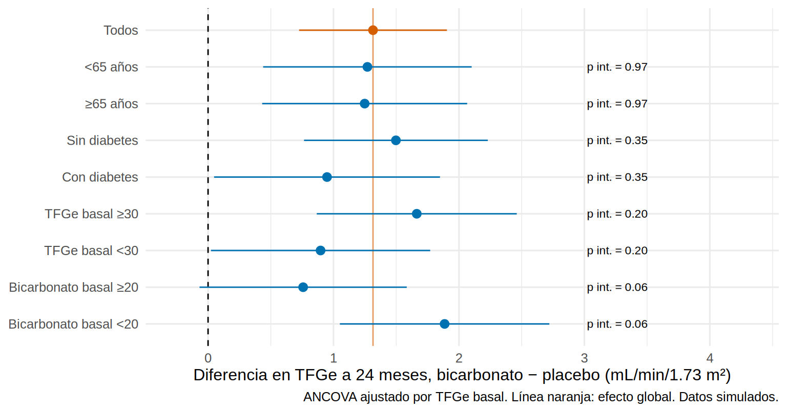
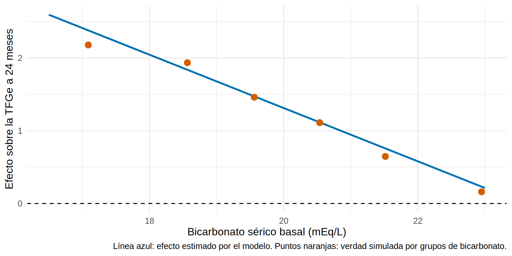

library(tidyverse)
library(broom)
library(emmeans)
theme_set(theme_minimal(base_size = 12))
eca <- read_csv("Bases/eca_bicarbonato.csv") |>
mutate(brazo = factor(brazo, levels = c("Placebo", "Bicarbonato")),
sexo = factor(sexo, levels = c("Mujer", "Hombre")),
dif24 = tfg_24 - tfg0,
edad_g = factor(edad >= 65, labels = c("<65 años", "≥65 años")),
bic_g = factor(bic0 < 20, labels = c("Bicarbonato basal ≥20", "Bicarbonato basal <20")),
dm_g = factor(dm, labels = c("Sin diabetes", "Con diabetes")),
tfg_g = factor(tfg0 < 30, labels = c("TFGe basal ≥30", "TFGe basal <30")))Subgrupos y heterogeneidad
Nota🩺 Escenario
El bicarbonato mejora la TFGe en promedio. Un nefrólogo del comité pregunta: “¿funciona igual en diabéticos que en no diabéticos? ¿En mayores de 65? ¿En quienes tienen la acidosis más marcada?”. Si miras suficientes subgrupos, alguno saldrá “significativo” por puro azar, y la tentación de publicarlo como hallazgo es enorme. Este subcapítulo te enseña a hacer la pregunta bien y a decidir cuándo creer la respuesta.
Lo que vamos a hacer
- Probar si el efecto difiere entre subgrupos con una prueba de interacción (y ver por qué no se comparan los p de cada subgrupo).
- Resumir los resultados en un forest plot.
- Medir cuánto engaña la multiplicidad y modelar el efecto de forma continua, contra la verdad.
Paso 1: la pregunta correcta es la interacción
Un efecto promedio puede esconder que el tratamiento funciona mejor en unos pacientes que en otros: es modificación del efecto (8.4) en un ensayo. En este ECA se anticipa que el bicarbonato beneficia más a quienes tienen acidosis más marcada.
La tentación es estimar el efecto en cada subgrupo y ver en cuál es “significativo”. Veamos qué pasa con el bicarbonato basal:
# A tibble: 2 × 4
# Groups: bic_g [2]
bic_g n efecto p
<fct> <dbl> <dbl> <dbl>
1 Bicarbonato basal ≥20 257 0.692 0.097
2 Bicarbonato basal <20 253 1.94 0 En el subgrupo con bicarbonato basal < 20 el efecto es grande y claramente significativo; en el de ≥ 20 es menor y no significativo (p ≈ 0.10). Concluir “el bicarbonato solo funciona en los más acidóticos” sería un error clásico: que uno sea significativo y otro no, no demuestra que difieran. Puede deberse solo a la precisión de cada estimación. La pregunta correcta no es “¿es significativo el efecto en cada subgrupo?” sino “¿difiere el efecto entre subgrupos?”, y se contesta con el término de interacción brazo × subgrupo:
Analysis of Variance Table
Model 1: tfg_24 ~ brazo + bic_g + tfg0
Model 2: tfg_24 ~ brazo * bic_g + tfg0
Res.Df RSS Df Sum of Sq F Pr(>F)
1 506 5741.8
2 505 5701.4 1 40.36 3.5748 0.05923 .
---
Signif. codes: 0 '***' 0.001 '**' 0.01 '*' 0.05 '.' 0.1 ' ' 1Hay cierta evidencia de interacción (p ≈ 0.06): el efecto es mayor con bicarbonato basal < 20 mEq/L (1.9 frente a 0.7), pero la evidencia es limitada, no un hallazgo establecido. Con el bicarbonato como variable continua (Paso 4) la señal es más clara.
Paso 2: el forest plot de subgrupos
Estimamos el efecto en cada subgrupo (con ANCOVA) y probamos la interacción por separado. Una función reutilizable:
efecto_subgrupo <- function(datos, variable) {
datos$sg <- datos[[variable]]
m_i <- lm(tfg_24 ~ brazo * sg + tfg0, data = datos)
m_s <- lm(tfg_24 ~ brazo + sg + tfg0, data = datos)
p_int <- anova(m_s, m_i)$`Pr(>F)`[2]
em <- emmeans(m_i, ~ brazo | sg) |> pairs(reverse = TRUE) |> summary(infer = TRUE)
as_tibble(em) |>
transmute(variable = variable, subgrupo = as.character(sg), diferencia = estimate,
inf = lower.CL, sup = upper.CL, p_interaccion = p_int)
}
sub <- map_dfr(c("edad_g", "dm_g", "tfg_g", "bic_g"), \(v) efecto_subgrupo(eca, v))
global <- lm(tfg_24 ~ brazo + tfg0, data = eca) |> tidy(conf.int = TRUE) |>
filter(term == "brazoBicarbonato") |>
transmute(variable = "Global", subgrupo = "Todos", diferencia = estimate, inf = conf.low, sup = conf.high, p_interaccion = NA_real_)
forest <- bind_rows(global, sub) |>
mutate(etiqueta = fct_rev(fct_inorder(paste(subgrupo))))
forest |> mutate(across(where(is.numeric), \(x) round(x, 2)))# A tibble: 9 × 7
variable subgrupo diferencia inf sup p_interaccion etiqueta
<chr> <chr> <dbl> <dbl> <dbl> <dbl> <fct>
1 Global Todos 1.31 0.73 1.9 NA Todos
2 edad_g <65 años 1.27 0.44 2.1 0.97 <65 años
3 edad_g ≥65 años 1.25 0.43 2.07 0.97 ≥65 años
4 dm_g Sin diabetes 1.5 0.76 2.23 0.35 Sin diabe…
5 dm_g Con diabetes 0.95 0.05 1.85 0.35 Con diabe…
6 tfg_g TFGe basal ≥30 1.66 0.87 2.46 0.2 TFGe basa…
7 tfg_g TFGe basal <30 0.9 0.02 1.77 0.2 TFGe basa…
8 bic_g Bicarbonato basal ≥20 0.76 -0.07 1.58 0.06 Bicarbona…
9 bic_g Bicarbonato basal <20 1.89 1.05 2.72 0.06 Bicarbona…x_texto <- max(forest$sup) + 0.3
ggplot(forest, aes(diferencia, etiqueta, xmin = inf, xmax = sup)) +
geom_vline(xintercept = 0, linetype = "dashed") +
geom_vline(xintercept = global$diferencia, color = "#D55E00", alpha = 0.6) +
geom_pointrange(aes(color = variable == "Global"), show.legend = FALSE) +
geom_text(aes(x = x_texto, label = ifelse(is.na(p_interaccion), "", paste0("p int. = ", sprintf("%.2f", p_interaccion)))),
hjust = 0, size = 3) +
scale_color_manual(values = c(`TRUE` = "#D55E00", `FALSE` = "#0072B2")) +
coord_cartesian(xlim = c(min(forest$inf) - 0.2, x_texto + 1.3), clip = "off") +
labs(x = "Diferencia en TFGe a 24 meses, bicarbonato − placebo (mL/min/1.73 m²)", y = NULL,
caption = "ANCOVA ajustado por TFGe basal. Línea naranja: efecto global. Datos simulados.")
Qué vemos. Solo el subgrupo por bicarbonato basal muestra una señal de interacción (p ≈ 0.06); los demás tienen p de interacción de 0.20 o más y sus IC se solapan con el global: las diferencias entre ellos son compatibles con el azar.
Paso 3: la multiplicidad, o cómo “encontrar” subgrupos que no existen
Con cuatro subgrupos ya hay riesgo de hallazgos falsos; con 10-20, es casi seguro. Lo comprobamos con una simulación sin ningún efecto: permutamos el brazo al azar (así el tratamiento no puede tener efecto ni interacción) y medimos con qué frecuencia al menos una de 10 interacciones sale con p < 0.05:
set.seed(2)
cuantos <- replicate(300, {
d <- eca |> filter(!is.na(tfg_24)) |> mutate(brazo = sample(brazo)) # brazo permutado: sin efecto
vars <- replicate(10, sample(c("a", "b"), nrow(d), TRUE)) # 10 "subgrupos" inventados
p <- apply(vars, 2, \(sg) {
anova(lm(tfg_24 ~ brazo + sg + tfg0, d), lm(tfg_24 ~ brazo * sg + tfg0, d))$`Pr(>F)`[2]
})
any(p < 0.05)
})
prop_falsos <- mean(cuantos) # proporción de ensayos "falsos" con al menos un subgrupo "significativo"
prop_falsos[1] 0.3733333Con 10 subgrupos aleatorios, 37 % de los ensayos sin efecto mostrarían al menos un “subgrupo significativo” (la teoría dice \(1 - 0.95^{10}\) = 40 %).
Advertencia⚠️ Subgrupos = generadores de hipótesis, salvo que se cumplan las reglas
Un subgrupo “significativo” descubierto después de ver los datos es una hipótesis para otro ensayo, no un resultado. Para creerlo (Sun et al., BMJ 2010): que esté preespecificado en el protocolo y con la dirección esperada; que sean pocos (idealmente ≤ 3-5) y con justificación biológica; que se base en una prueba de interacción, no en comparar valores p entre subgrupos; que sea consistente con otros ensayos o con datos biológicos; que se defina por una característica basal; y que se replique en otro estudio.
Paso 4: heterogeneidad continua, no dicotomices
Dicotomizar el bicarbonato (< 20 frente a ≥ 20) pierde información. El efecto se puede modelar como función continua del bicarbonato basal:
# A tibble: 2 × 7
term estimate std.error statistic p.value conf.low conf.high
<chr> <dbl> <dbl> <dbl> <dbl> <dbl> <dbl>
1 brazoBicarbonato 1.31 0.299 4.39 0 0.725 1.90
2 brazoBicarbonato:I(bi… -0.366 0.171 -2.14 0.033 -0.702 -0.031El coeficiente de la interacción (-0.37, p = 0.03) indica que el beneficio aumenta ~0.4 mL/min/1.73 m² por cada mEq/L menos de bicarbonato basal. Lo comparamos con la verdad simulada (el efecto ITT real a 24 meses por tramos de bicarbonato):
oraculo <- read_csv("Bases/eca_bicarbonato_oraculo.csv")
verdad <- eca |> left_join(oraculo, by = "id") |>
mutate(bic_bin = cut(bic0, c(0, 18, 19, 20, 21, 22, 30))) |>
group_by(bic_bin) |>
summarise(bic = mean(bic0), efecto_itt_real = mean(cumplidor * efecto_ind) * 2, .groups = "drop")
nuevo <- expand_grid(bic0 = seq(16.5, 23, 0.25), brazo = c("Placebo", "Bicarbonato")) |>
mutate(brazo = factor(brazo, levels = levels(eca$brazo)), tfg0 = mean(eca$tfg0))
pred <- bind_cols(nuevo, as_tibble(predict(m_cont, nuevo, interval = "confidence"))) |>
pivot_wider(names_from = brazo, values_from = c(fit, lwr, upr)) |>
mutate(diferencia = fit_Bicarbonato - fit_Placebo)
ggplot(pred, aes(bic0, diferencia)) +
geom_hline(yintercept = 0, linetype = "dashed") +
geom_line(color = "#0072B2", linewidth = 1) +
geom_point(data = verdad, aes(bic, efecto_itt_real), color = "#D55E00", size = 3) +
labs(x = "Bicarbonato sérico basal (mEq/L)", y = "Efecto sobre la TFGe a 24 meses",
caption = "Línea azul: efecto estimado por el modelo. Puntos naranjas: verdad simulada por grupos de bicarbonato.")
El modelo sigue la tendencia de la verdad (mayor beneficio con menor bicarbonato), con un IC amplio, como corresponde a un ensayo de 640 pacientes.
Paso 5: efecto heterogéneo y decisiones
La heterogeneidad relativa (HR, RR) y la absoluta (diferencia de riesgos o de medias) pueden no coincidir (8.4). Para decidir a quién tratar importa el beneficio absoluto, que depende del efecto relativo y del riesgo basal del paciente. Los métodos que estiman el efecto individual esperado con muchas covariables (causal forests, meta-learners) se presentan en el Cap. 19; en un ECA pequeño son exploratorios.
Importante🎯 En resumen
- Prueba la interacción; nunca compares valores p de subgrupos (que uno sea significativo y otro no, no prueba diferencia).
- Preespecifica pocos subgrupos, basados en una característica basal con justificación biológica.
- La multiplicidad produce falsos hallazgos: con 10 subgrupos, ~37 % de los ensayos sin efecto muestran uno “significativo”.
- Modela la variable modificadora como continua cuando sea posible y presenta un forest plot con el p de interacción.
- Los subgrupos son generadores de hipótesis, salvo que estén preespecificados y confirmados.
Ejercicio
- Calcula la interacción tratamiento × sexo y agrégala al forest plot.
- Repite el experimento de falsos positivos con 5 subgrupos. ¿Qué proporción obtienes?
- Estima el efecto del bicarbonato en quienes tienen bic0 < 19 y en bic0 ≥ 21. ¿Qué diferencia hay entre ambos?